إعطاء حق الأسبقية
79 نصيحة.
1
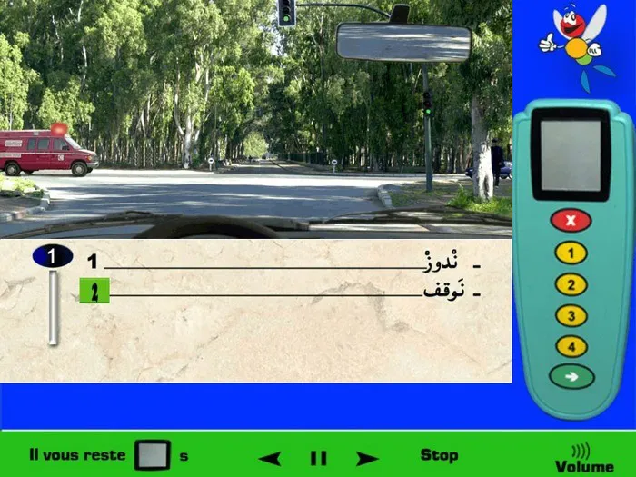
سيارة الإسعاف في مهمّة وهذا واضح من خلال ضوء التّنبيه بالأحمر الذي يشتغل فوقها، عندما تكون سيارة الإسعاف في مهمّة إستعجالية فالأولوية لها على الرّغم من أن الإشارة الضوئية خضراء. إذن في هذه الحالة يجب عليّ الوقوف والسّماح لسيارة الإسعاف بالمرور.
2
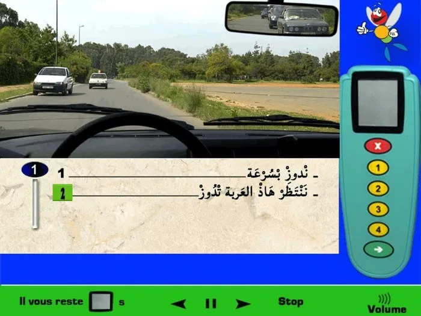
يوجد عائق بالنسبة للسيارة القادمة من الأمام والتي هي سيارة شرطة والعائق هي السيّارة المتوقفة في جهتها أي أنه يجب عليها الوقوف وإعطائي حق الأسبقية، لكن كما يظهر في الصورة فإن سيارة الشّرطة في مهمّة وهذا واضح من خلال ضوء التّنبيه بالأحمر الذي يشتغل فوقها، عندما تكون سيارة الشّرطة في مهمّة إستعجالية فالأولوية لها دائما. إذن في هذه الحالة سوف أنتظر سيّارة الشّرطة تقوم بالمرور أوّلا.
3
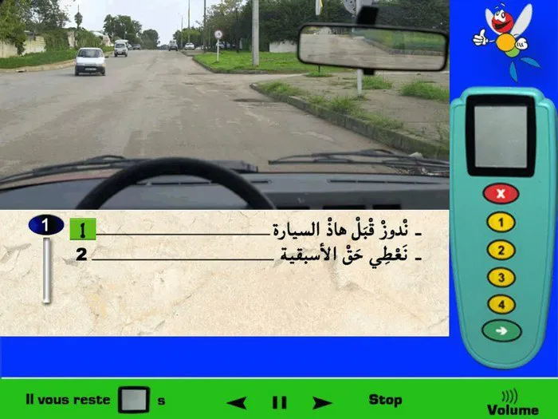
السيّارة البيضاء تريد الإنعطاف على اليسار إذن أنا سوف أصبح على يمينها، وبالتالي يجب على السيّارة البيضاء أن تعطيني حق الأسبقية في المرور. إذن في هذه الحالة أقوم بالمرور قبل هذه السيّارة البيضاء.
4
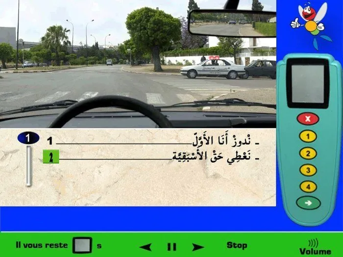
سيارة الشّرطة في مهمّة وهذا واضح من خلال ضوء التّنبيه بالأحمر الذي يشتغل فوقها، عندما تكون سيارة الشّرطة في مهمّة إستعجالية فالأولوية لها دائما. إذن في هذه الحالة سوف أعطي حق الأسبقية لسيّارة الشرطة بالمرور أوّلا.
5
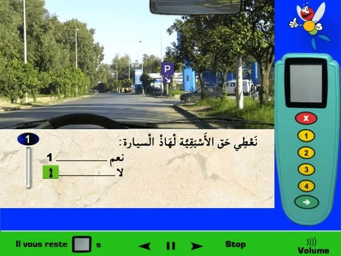
السيّارة المتواجدة على اليمين فهي تخرج من موقف سيارات (لم تكن في حالة سير) كانت متواجدة في مكان خاص ويجب عليها التوقف. إذن في هذه الحالة لا أقوم بإعطاء حق الأسبقية للسّيارة المتواجدة على اليمين.
6
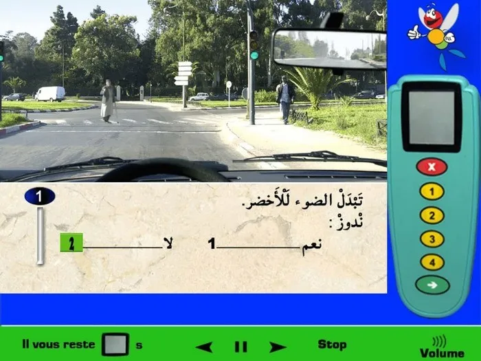
في حالة تواجد راجل في ممر الراّاجلين والضوء أخضر فيجب عليّ إنتظار الراجل لكي يقوم بالمرور وبعد ذلك يمكنني المرور بعد ذلك، لأنه لو قمت بالمرور الان فسوف أصطدم بالراجل. لذلك في هذه الحالة لا أقوم بالمرور الان.
7
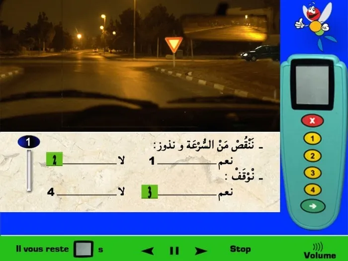
العلامة الطّرقية تعني أنه ليس لدي حق الأسبقية في هذا الملتقى الطّرقي، وهذا يعني على أنه يجب عليّ إعطاء حق الأسبقية للعربات القادمة من الجهة اليمنى وكذلك للعربات القادمة من الجهة اليسرى، في هذه الحالة فلا يجب عليّ الإنقاص من السّرعة والمرور لأنه توجد سيارة على اليمين ويجب عليّ أن أسمح لها بالمرور أوّلا بما أنه ليس لي حق الأسبقية، وأيضا أقوم بالوقوف لكي أسمح للسيّارة بالمرور أوّلا.
8
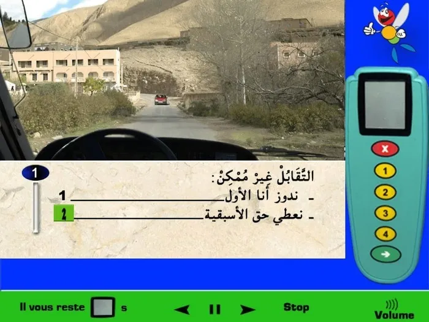
التّقابل غير ممكن معناه أنه لا يمكنني المرور أنا والسيّارة مع بعض في هذه الطّريق الضيّقة، يمكن أن يمّر واحد فقط، في هذه الحالة بما أن السيّارة التي أمامي هي التي وصلت أوّلا إلى الطّريق الضيّقة (يمكن أن تكون تلك قنطرة) فيجب عليّ أن أعطيها حق الأسبقية وأن أسمح لها بالمرور أوّلا.
9
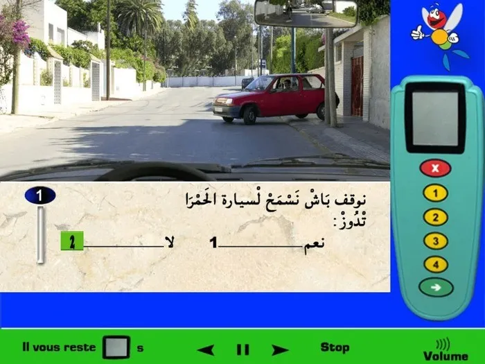
بما أن السيّارة تخرج من مكان خاص (كراج) فيجب عليها الوقوف وإعطائي حق الأسبقية في المرور أوّلا. إذن في هذه الحالة ليس من الواجب عليّ الوقوف والسّماح للسيّارة بالمرور.
10
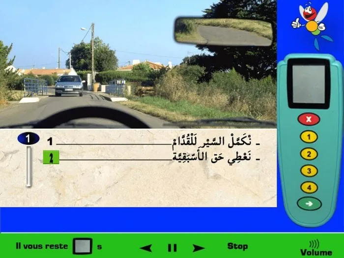
بما أن السيّارة التي أمامي توجد في القنطرة ولكي أقوم بتسهيل عملية التّقابل فيجب عليّ إعطائها حق الأسبقية. (لا توجد قاعدة في القنطرة، العربة التي تتواجد أولا قرب القنطرة هي التي لديها حق أسبقية المرور أوّلا).
11
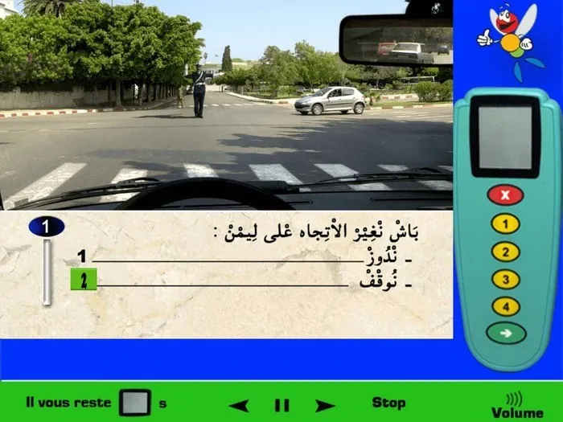
عندما يكون شرطي المرور يعطيني بالظّهر أو يقف أمامي مباشرة فهذا يعني الوقوف بالنسبة لي ويجب عليّ الوقوف وإنتظار إشارته للمرور. في هذه الحالة بما أن شرطي المرور يقف أمامي مباشرة فيجب عليّ الوقوف مهما كان إتّجاهي.
12
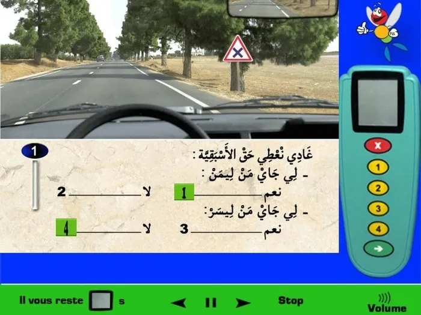
العلامة الطّرقية تعني إنتباه خطر ملتقى طرق على بعد 150 متر والأسبقية للعربات القادمة من اليمين. إذن في هذه الحالة سوف أقوم بإعطاء حق الأسبقية للعربات القادمة من اليمين فقط.
13
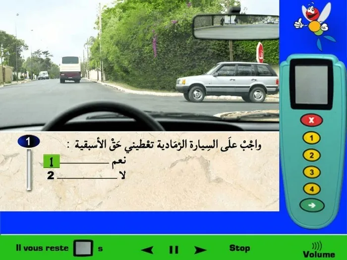
بما أنه السيّارة الرّمادية لديها علامة قف، فيجب عليها الوقوف وإعطاء حق الأسبقية للعربات القادمة من الجهة اليمنى واليسرى، إذن في هذه الحالة فإنه من الواجب على السيّارة الرّمادية إعطائي حق الأسبقية.
14
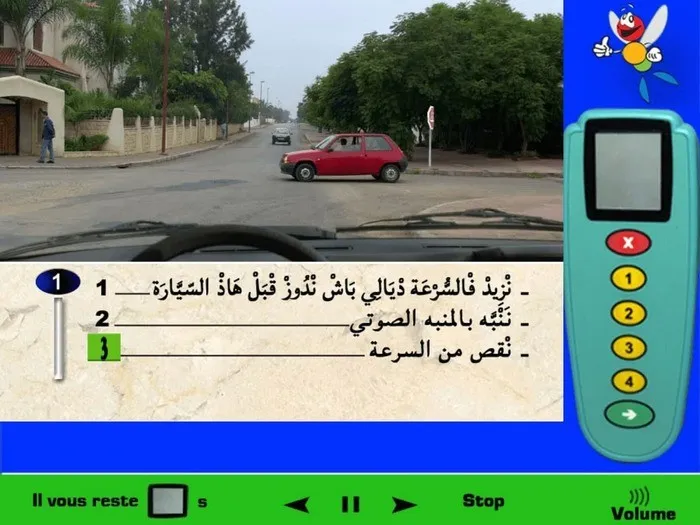
نتواجد قرب ملتقى الطّّرق، السيارة الحمراء يجب عليها إعطاء حق الأسبقية للعربات القادمة من اليمين واليسار بما أنه لديها علامة قف. في هذه الحالة بما أن السيّارة الحمراء قامت بمخالفة فلا يمكنني الزّيادة في السّرعة والمرور قبلها لأنه يوجد خطر الإصطدام بها، وبما أنّني أتواجد داخل المجال الحضري فلا يمكنني إستعمال المنبّه الصوتي إلّا في حالة الخطر والضّرورة. إذن القرار المنطقي في هذه الحالة هو الإنقاص من السّرعة.
15
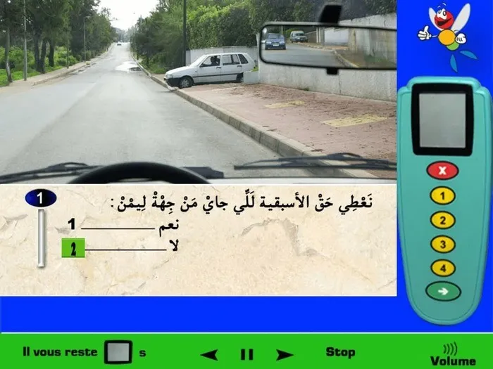
بما أن السيّارة تخرج من مكان خاص (كراج) فيجب عليها الوقوف وإعطائي حق الأسبقية في المرور أوّلا. إذن في هذه الحالة ليس من الواجب عليّ الوقوف والسّماح للسيّارة بالمرور.
16
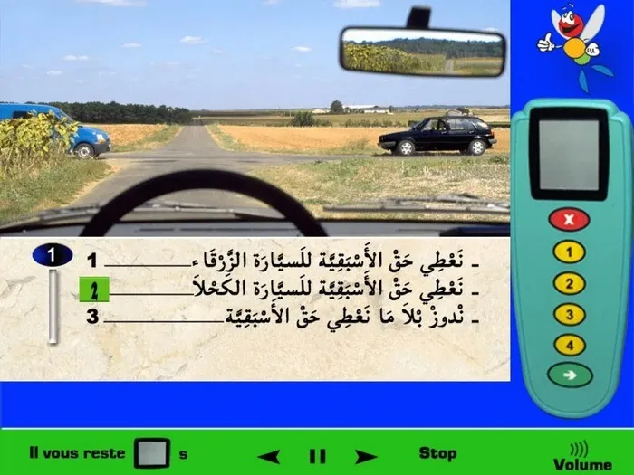
نتواجد قرب ملتقى طرق ولا توجد علامة طرقية تنظّم حركة السيّر، في هذه الحالة القاعدة تقول الأسبقية للعربات القادمة من الجهة اليمنى، إذن في هذا الملتقى الطّرقي سوف أقوم بالوقوف و إعطاء حق الأسبقية للسيارة السوداء المتواجدة على اليمين لأن الأسبقية لها فقط.
17
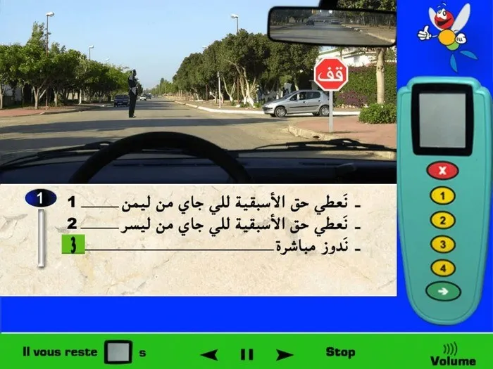
عندما يتواجد شرطي المرور فتلغى جميع الإشارات الضوئية و الإشارات الطّرقية، في هذه الحالة على الرّغم من وجود علامة قف فيجب علينا إتّباع وضعية الشّرطي، وضعية الشّرطي فهي بالجنب وهي تعني أنه يسمح لي بالمرور، إذن في هذه الحالة أقوم بالمرور مباشرة.
18
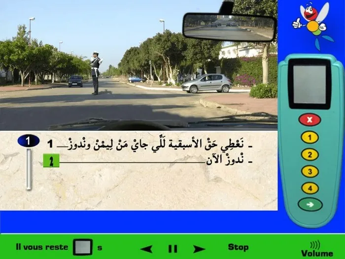
وضعية الشّرطي فهي بالجنب وهي تعني أنه يسمح لي بالمرور، إذن في هذه الحالة أقوم بالمرور أنا الأول.
19
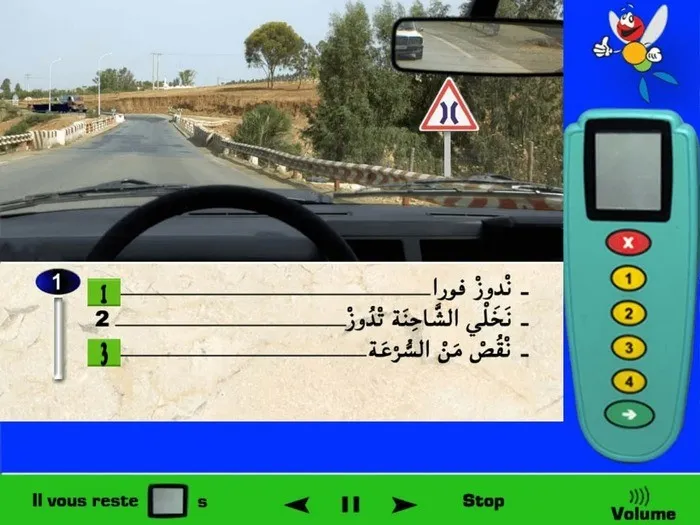
العلامة الطّرقية تعني إنتباه خطر طريق ضيّقة على الجانبين (قنطرة)، توجد شاحنة قادمة من الأمام ولكي يكون التّقابل سهل فالقاعدة تقول عندما نتواجد في طريق ضيّقة ونتقابل مع عربة يتجاوز طولها 7 أمتار أو يتجاوز عرض العربة 2 أمتار فيجب عليها الوقوف والسّماح للعربة الأخرى بالمرور أوّلا. إذن في هذه الحالة أقوم بالمرور أنا الأول وأقوم بالإنقاص من السّرعة بما أنه يوجد خطر طريق ضيّقة.
20
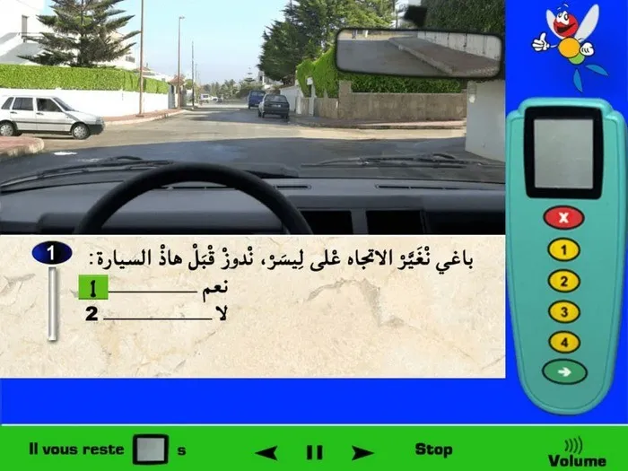
نتواجد قرب ملتقى طرق ولا توجد علامة طرقية تنظّم حركة السيّر، في هذه الحالة القاعدة تقول الأسبقية للعربات القادمة من الجهة اليمنى فقط، إذن في هذا الملتقى الطّرقي يجب على السيّارة البيضاء المتواجدة على اليسار أن تقوم بالوقوف وإعطائي حق الأسبقية لأنني أتواجد على يمينها. إذن أقوم بالمرورقبل هذه السيّارة البيضاء.
21
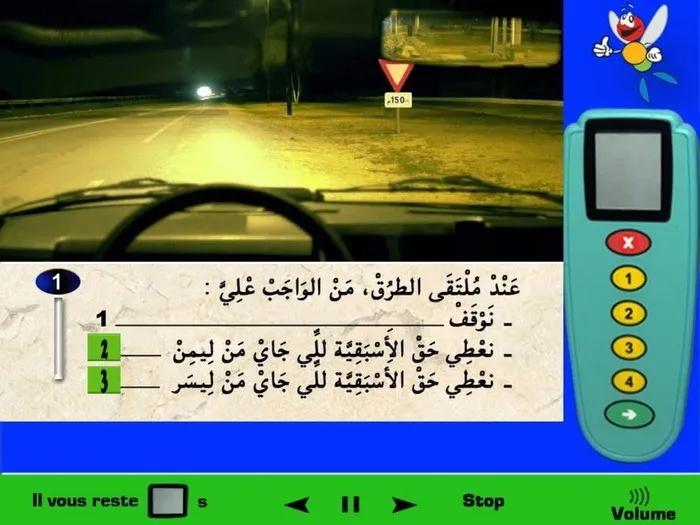
العلامة الطّرقية تعني ليس لي حق الأسبقية في ملتقى الطّرق القادم الذي يتواجد على بعد 150 متر، إذن في ملتقى الطّرق القادم ليس من الواجب الوقوف لأنه لا توجد لدي علامة قف في ملتقى الطّرق القادم، العلامة الطّرقية تعني على أنه يجب عليّ إعطاء حق الأسبقية للعربات القادمة من الجهة اليمنى وكذلك من الجهة اليسرى.
22
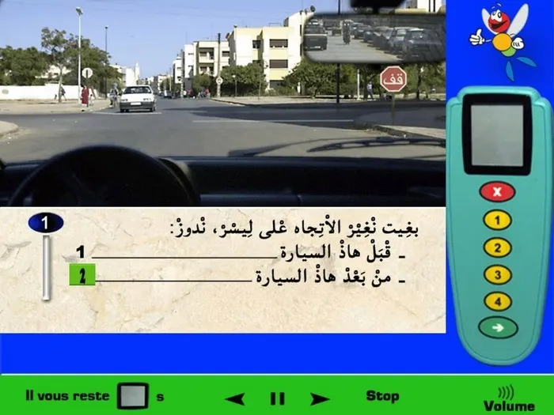
نتواجد قرب ملتقى الطرق، لدي علامة قف والسيّارة التي أمامي لديها أيضا علامة قف، في هذه الحالة بما أنني أريد تغيير الإتّجاه إلى اليسار إذن سوف تصبح السيّارة البيضاء على يميني وفي هذه الحالة يجب عليّ السماح لها بالمرور أولا. إذن إذا أردت تغيير الإتّجاه إلى اليسار أقوم بذلك بعد مرور السيّارة البيضاء.
23
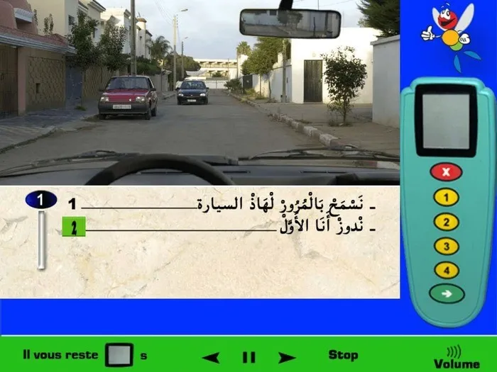
بما أنه يوجد عائق (سيارة) في جهة السيّارة التي تقابلني إذن يجب عليها أن تقف وتنتظرني أن أقوم بالمرور أنا أولا، لأنه أنا ليس لديّ عائق في جهتي. إذن أقوم بالمرور أنا الأول.
24
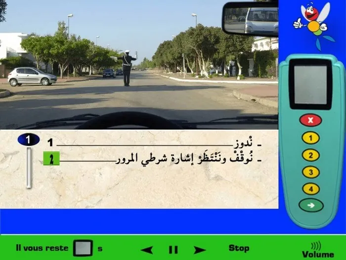
عندما تكون وضعية شرطي المرور بالظّهر مثل الصورة فهذا يعني أنه يجب عليّ الوقوف وإنتظار إشارة شرطي المرور.
25
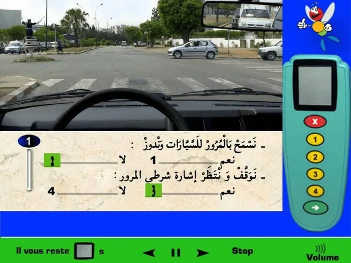
يوجد شرطي مرور في وسط ملتقى الطّرق لكي يقوم بتنظيم حركة السّير، في هذه الحلة القاعدة لا تتغيّر، عندما تكون وضعية الشّرطي بالظّهر كما الصورة فيجب عليّ الوقوف. إذن في هذه الحالة يجب عليّ السّماح بالسيّارت بالمرور (ولا أقوم بالمرور بعد ذلك)، بل يجب عليّ أن أقوم بالوقوف وأنتظر إشارة شرطي المرور لكي أقوم بالمرور.
26
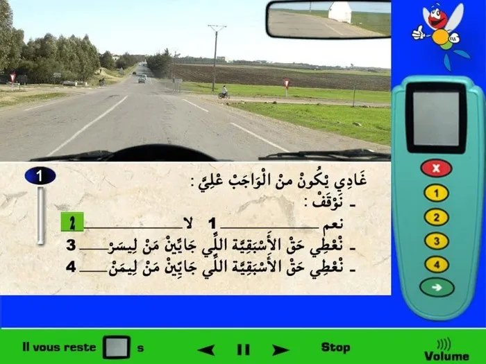
كما نلاحظ فالطّريق على اليمين وعلى اليسار في ملتقى الطّرق لديهم علامة طرقية تعني أنه ليس لديهم حق الأسبقية إذن الأسبقية لي في ملتقى الطّرق القادم أي أنني في طريق ذات أولوية. إذن في هذه الحالة ليس من الواجب عليّ الوقوف ولا أقوم بإعطاء حق الأسبقية للسيارات القادمة من اليمين وكذلك من اليسار.
27
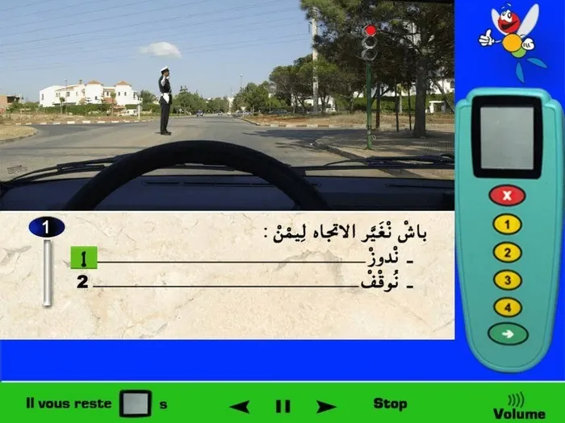
عندما يتواجد شرطي المرور فتلغى جميع الإشارات الضوئية و الإشارات الطّرقية، في هذه الحالة على الرّغم من أن الإشارة الضوئية حمراء فيجب علينا إتّباع وضعية الشّرطي، وضعية الشّرطي تعني على أنه يسمح لي بالمرور، إذن لكي أقوم بتغيير الإتّجاه لليمين فأقوم بالمرور.
28
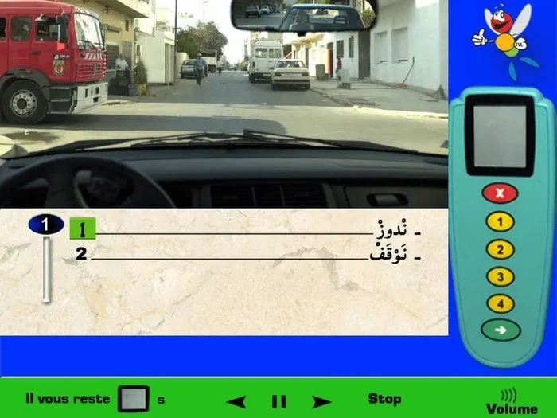
بما أن سيارة الإطفاء لا تستعمل إشارات التّنبيه فهي تعتبر في هذه الحالة عربة عادية مثل باقي العربات وليس لها حق الأسبقية، إذن بما أنني أتواجد على يمين سيارة الإطفاء ولا توجد علامات طرقية تنظّم حركة السّير فيجب على سيارة الإطفاء أن تعطيني حق الأسبقية، إذن في هذه الحالة أقوم بالمرور أولا.
29
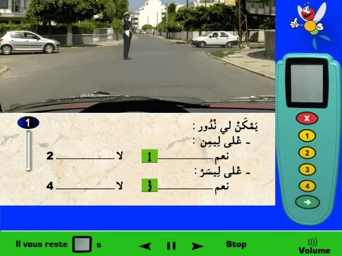
وضعية شرطي المرور الموضّحة في الصورة تسمح لي بالمرور (فاش يكون عاطيني بالجنب ندوز وفاش يكون عاطيني بوجهو ولا ظهرو خاص نوقف)، السيارت المتواجدة على اليمين واليسار فهي واقفة لان وضعية الشرطي بالنسبة لهم تعني أن عليهم الوقوف. إذن يمكنني المرور على اليمين أو على اليسار بما أن شرطي المرور يسمح لي بالمرور.
30
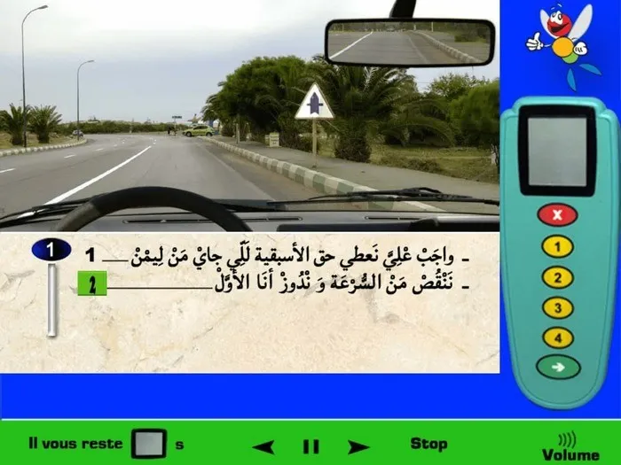
العلامة الطّرقية تعني إنتباه الطّريق ذات أولوية أي أنه لدي حق الأسبقية في ملتقى الطّرق القادم ولن أعطي حق الأسبقية للعربات القادمة من اليمين لأن الأسبقية لي، إذن في هذه الحالة بما أن العلامة الطّرقية هي علامة خطر ويوجد ملتقى طرق قريب إذن يجب عليّ الإنقاص من السّرعة وأقوم بالمرور أنا الأول.
31
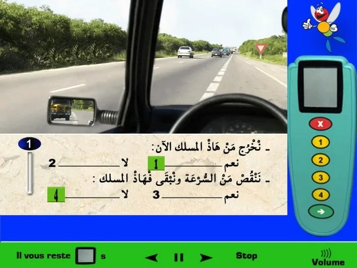
أتواجد في مسلك الإندماج والذي يقترب من الإنتهاء، في هذه الحالة بما أنه يوجد عربة من الوزن الثقيل في الخلف وتبدو بعيدة وسرعتها بطبيئة، فيمكنني الزيادة في السرعة والإندماج في مسلك السّير العادي الان بما أن مسلك الإندماج لم يتبقى له الكثير وينتهي وهذا يعني أنني لن أستمر في السّير فيه.
32
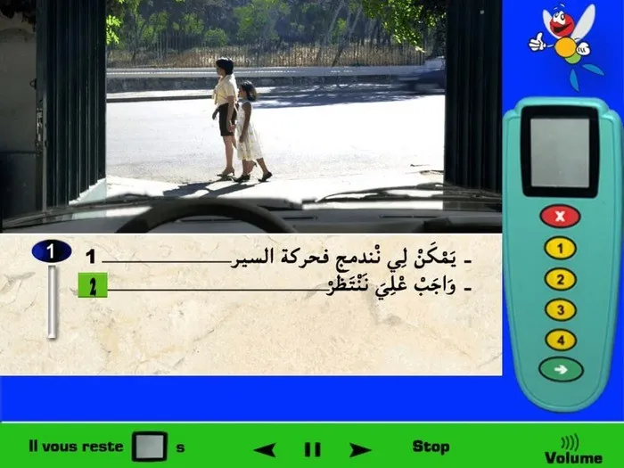
لا يمكنني الإندماج في حركة السّير الان لأنه يوجد راجلين يقومون بالمرور ويجب عليّ الإنتظار، لو قمت بالإندماج في حركة السّير الان سوف أقوم بالإصطدام بهم. إذن في هذه الحالة من الواجب عليّ الإنتظار.
33
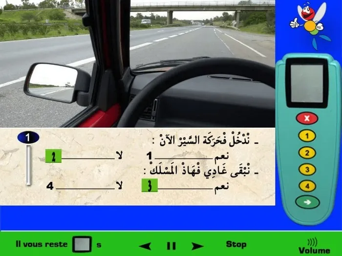
أتواجد في مسلك الإندماج، كما نلاحظ فيوجد خط متّصل على اليسار ولا يمكنني تخطيه الان والإندماج، يجب عليّ الإنتظار إلى حين أن يصبح الخط متقطّع. إذن في هذه الحالة لا يمكنني الدخول في حركة السّير الان ويجب عليّ البقاء و إكمال السّير في مسلك الإندماج.
34
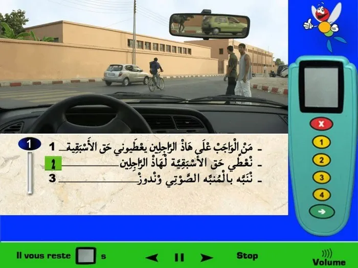
الراجلين مندمجون في ممر الرّاجلين يعني الأسبقية لهم ويجب عليّ الوقوف وإعطائهم حق الأسبقية في المرور أوّلا. (المنبّه الصوتي ممنوع على الرّاجلين، ولا يمكنني المرور لأن الأسبقية للرّاجلين في ممر الرّاجلين).
35
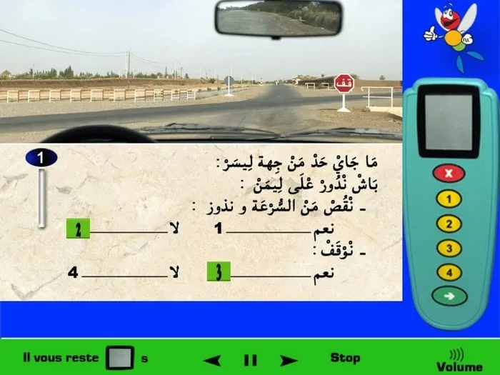
نتواجد في ملتقى طرق، ولدينا علامة قف وهي تجبرني على الوقوف مهما كانت الطّريق فارغة أو لا. إذن في هذه الحالة لكي أقوم بالإنعطاف على اليمين لا يمكنني الإنقاص من السير والمرور مباشرة، بل جب عليّ الوقوف والتأكد من الطّريق وبعد ذلك يمكنني الإنعطاف على اليمين.
36
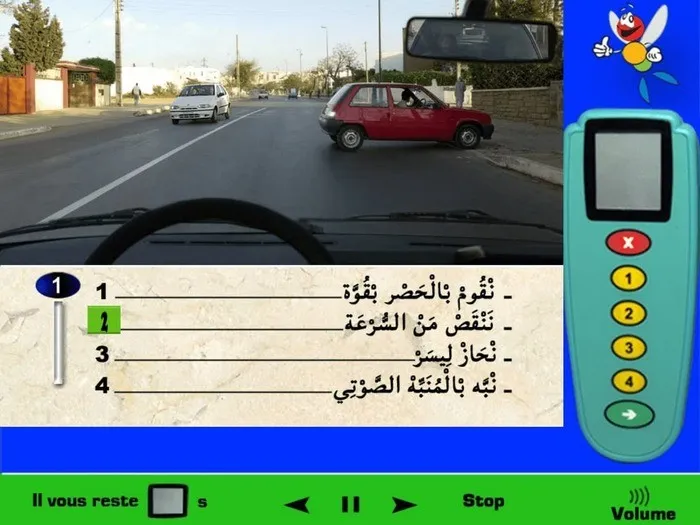
السيّارة الحمراء تقوم بالرّجوع للخلف، لا يمكنني الحصر بقوة والتوقّف لأنه توجد سيارة في الخلف وسوف تصطدم بي في حالة قمت بالحصر بقوّة، لا يمكنني الإنحياز لليسار لأنه توجد سيّارة قادمة في الإتّجاه المعاكس، وكذلك لا يمكنني إستعمال المنبّه الصّوتي لأننا داخل المجال الحضري ونستعمله فقط في حالة الخطر أو للضّرورة، إذن في هذه الحالة القرار الصائب والمنطقي هو الإنقاص من السّرعة.
37
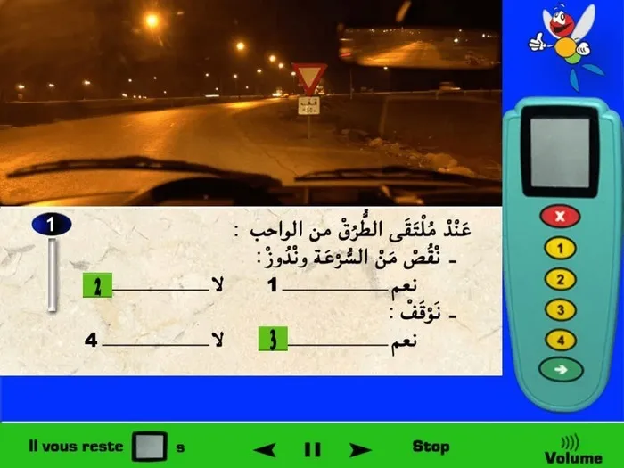
العلامة الطّرقية تعني إنتباه ليس لي حق الأسبقية وتوجد علامة تكميلية تشير إلى وجود علامة قف على بعد 150 متر في ملتقى الطّرق القادم، إذن لا يمكنني الأنقاص من السّرعة والمرور مباشرة في ملتقى الطّرق القادم بل من الواجب عليّ الوقوف.
38
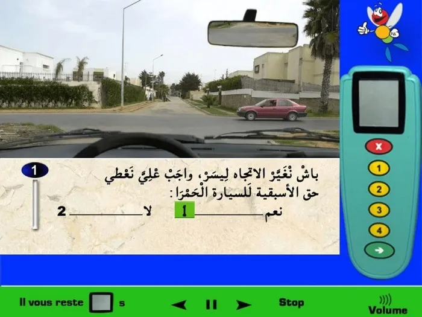
نتواجد قرب ملتقى طرق، ولا توجد علامات طرقية تنظّم حركة السّير في هذا الملتقى إذن سوف نقوم بتطبيق القاعدة العامة لملتقيات الطّرق وهي الأسبقية للعربات القادمة من الجهة اليمنى. إذن في هذه الحالة لكي أقوم بالإنعطاف على اليسار فيجب عليّ إعطاء حق الأسبقية للسيّارة الحمراء لأنها تتواجد على اليمين والأسبقية لها.
39
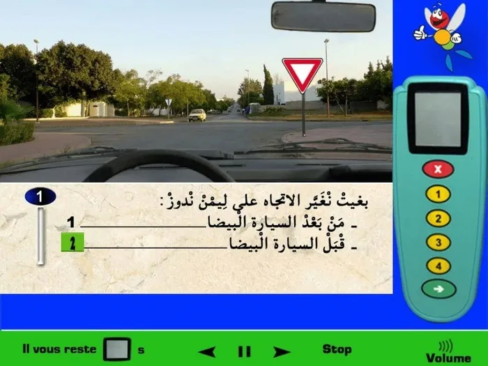
العلامة الطّرقية تعني ليس لي حق الأسبقية في هذا الملتقى الطّرقي، والسيّارة التي في الإتّجاه المعاكس لديها نفس العلامة الطّرقية. إذن بما أنني سوف أنعطف على اليمين سوف أتواجد على يمين السيّارة، أي أنه يجب عليها أن تعطيني حق الأسبقية لأنني سوف أتواجد على يمينها. (في مثل هذه الحالات لكي لا تتشتت(ي) عندما تريد إكمال سّير مباشرة أو الإنعطاف على اليمين فالأسبقية لك) إذن إذا أردت تغيير الإتّجاه لليمين فأقوم بذلك قبل السيّارة البيضاء.
40
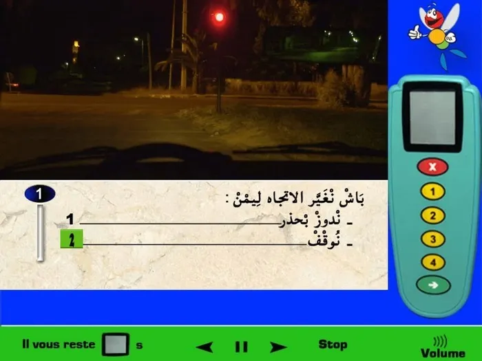
حتى وإن كانت الطّريق فارغة ولا يوجد أحد فلا يمكنني المرور بحذر، الإشارة الضوية الحمراء و تجبرني على الوقوف وإنتظار الإشارة الضوئية الخضراء لكي أستطيع المرور. إذن في هذه الحالة لكي أقوم بتغيير الإتّجاه إلى اليمين فيجب عليّ بالوقوف.
41
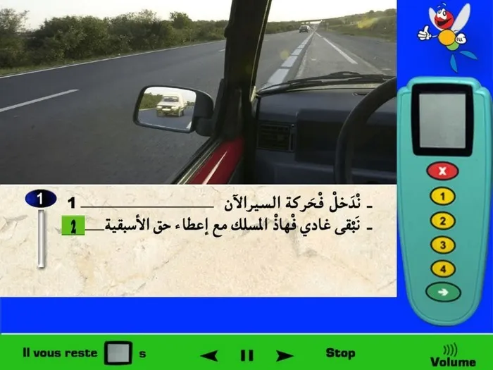
المرآة الجانبية للسيّارة توضّح أنه توجد سيّارة قادمة من الخلف، إذن لا أستطيع الدخول في حركة السّير الان. إذن في هذه الحالة سوف أبقى أسير في مسلك الإندماج مع إعطاء حق الأسبقية للسيّارة.
42
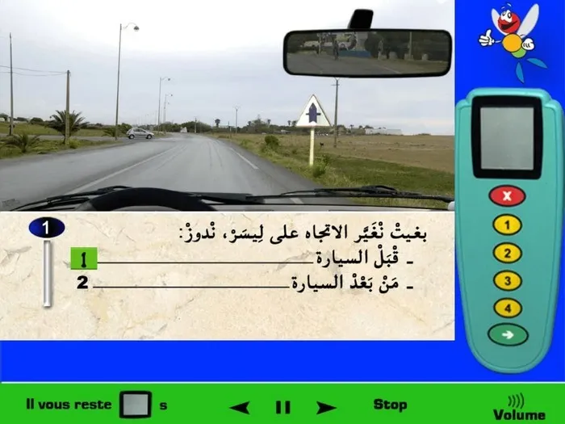
العلامة الطّرقية تعني إنتباه طريق ذات أولوية وهذا يعني أن الأسبقية لي في ملتقى الطّرق القادم ولن أقوم بإعطاء حق الأسبقية للعربات القادمة من الجهة اليمنى أو اليسرى، إذن في هذه الحالة إذا أردت تغيير الإتّجاه إلى اليسار فأقوم بالمرور قبل السيّارة.
43
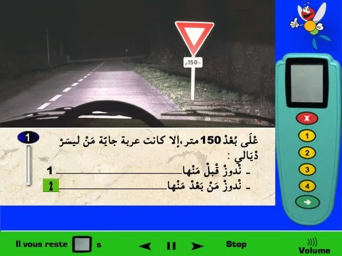
العلامة الطّرقية تعني ليس لي حق الأسبقية في ملتقى الطّرق القادم المتواجد على بعد 150 متر، إذن في هذه الحالة بما أنه ليس لي حق الأسبقية في ملتقى الطّرق القادم وإذا كانت هنالك عربة قادمة من اليسار فسوف أقوم بالمرور بعدها.
44
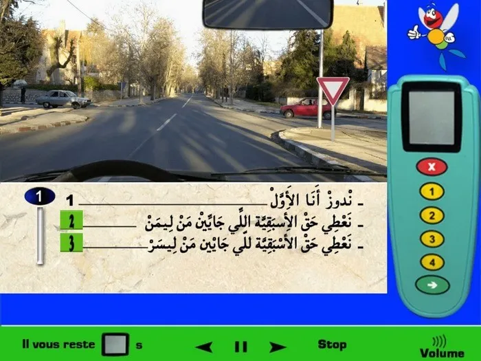
العلامة الطّرقية تعني ليس لي حق الأسبقية في هذا الملتقى الطّرقي، إذن في هذه الحالة بما أنه ليس لي حق الأسبقية في هذا الملتقى الطّرقي إذن لا يمكنني المرور أنا الأول بل يجب عليّ إعطاء حق الأسبقية للعربات القادمة من اليمين وأيضا من اليسار.
45
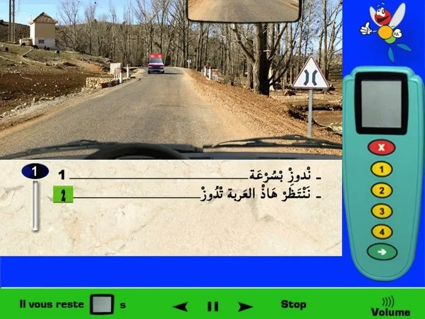
سيارة الإسعاف في مهمّة وهذا واضح من خلال ضوء التّنبيه بالأحمر الذي يشتغل فوقها، عندما تكون سيارة الإسعاف في مهمّة إستعجالية فالأولوية لها دائما. إذن في هذه الحالة يجب عليّ إنتظار سيارة الإسعاف أن تقوم بالمرور أوّلا.
46
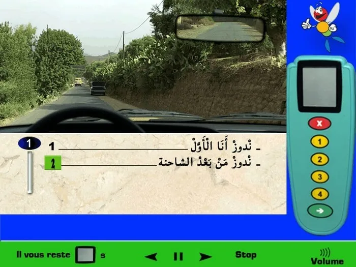
يوجد عائق في مسلك السّير الخاص بي وهي سيارة متوقفة، لكي أقوم بإكمال السّير فيجب عليّ أن أقوم بتجاوز هذه السيّارة المتوقّفة، ولكي أقوم بتجاوزها يجب أن تكون الطّريق أمامي فارغة، في هذه الحالة بما أن الطّريق أمامي ليست فارغة وتوجد شاحة قادمة في الإتّجاه المعاكس إذن سوف أقوم بتجاوز السيّارة و المرور بعد مرور الشّاحنة.
47
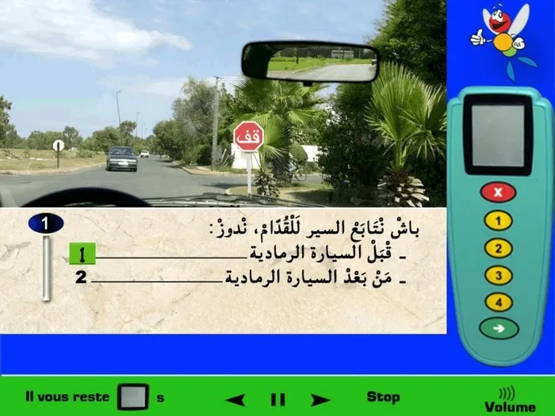
لدي علامة قف وأيضا السيّارة الرّمادية القادمة من الأمام لديها علامة قف أيضا، في هذه الحالة بما أن السيّارة الرّمادية تريد الإنعطاف على اليسار إذن سوف أتواجد على يمينها، وهذا يعني على أنه يجب على السيّارة الرّمادية إعطائي حق الأسبقية في المرور أولا. إذن في هذه الحالة أقوم بالوقوف عند علامة قف وبعد ذلك أقوم بالمرور قبل السيّارة الرّمادية.
48
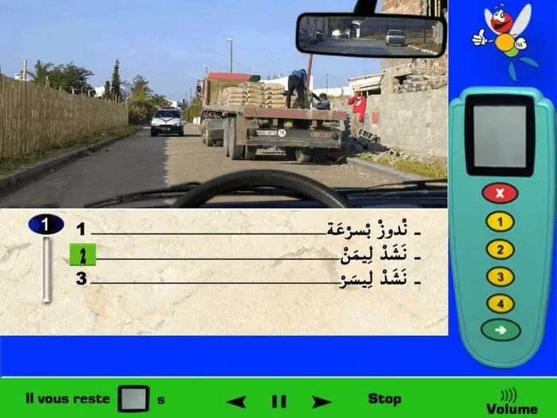
يوجد عائق في مسلك السّير الخاص بي وهي الشّاحنة المتوقّفة، لكي أقوم بإكمال السّير فيجب عليّ أن أقوم بتجاوز هذه الشّاحنة المتوقّفة، ولكي أقوم بتجاوزها يجب أن تكون الطّريق أمامي فارغة، في هذه الحالة بما أن الطّريق أمامي ليست فارغة وتوجد سيارة شرطة قادمة في الإتّجاه المعاكس إذن سوف أقوم بالإنحياز إلى اليمين وإنتظار سيارة الشرطة لكي تقوم بالمرور وبعد ذلك يمكنني المرور.
49
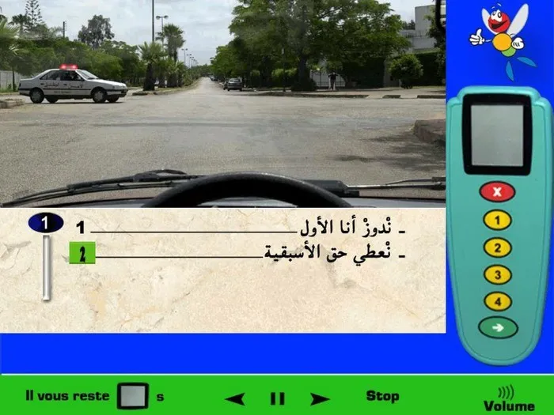
الأسبقية للسيّارات المتواجدة على اليمين في ملتقى الطّرق وأنا أتواجد على يمين سيارة الشّرطة إذن الأسبقية لي، لكن سيارة الشّرطة في مهمّة وهذا واضح من خلال ضوء التّنبيه بالأحمر الذي يشتغل فوقها، عندما تكون سيارة الشّرطة في مهمّة إستعجالية فالأولوية لها دائما. إذن في هذه الحالة سوف أعطي حق الأسبقية لسيّارة الشرطة بالمرور أوّلا.
50
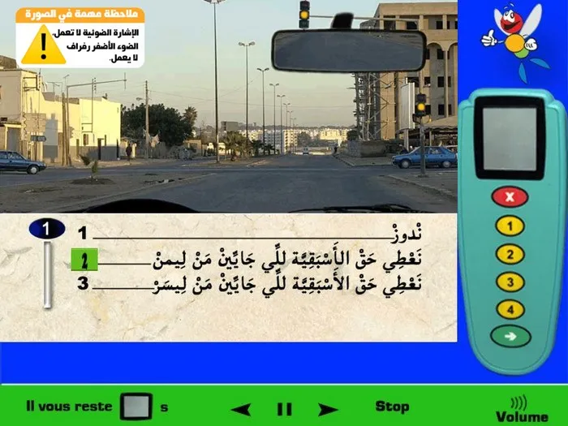
بما أن الإشارة الضوئية لا تشتغل والضوء الأصفر رفراف لا يشتغل إذن سوف أقوم بتطبيق القاعدة العامة لملتقيات الطّرق وهي الأسبقية للعربات القادمة من الجهة اليمنى، إذن في هذه الحالة سوف أقوم بإعطاء حق الأسبقية للعربات القادمة من الجهة اليمنى.
51
بما أن الإشارة الضوئية لا تشتغل والضوء الأصفر رفراف لا يشتغل إذن سوف أقوم بتطبيق القاعدة العامة لملتقيات الطّرق وهي الأسبقية للعربات القادمة من الجهة اليمنى، إذن في هذه الحالة بما أنه لا توجد سيارة قادمة من الجهة اليمنى، والعربة التي على الجهة اليسرى يجب عليها أن تعطيني حق الأسبقية في المرور لأنني أتواجد على يمينها. إذن في هذه الحالة أقوم بالمرور.
52
العلامة الطّرقية تعني أنه ليس لديّ حق الأسبقية في هذا الملتقى الطّرقي، وهذا يعني على أنه يجب عليّ إعطاء حق الأسبقية للعربات القادمة من الجهة اليمنى وكذلك للعربات القادمة من الجهة اليسرى. في هذه الحالة ليس من الواجب على السيّارة الموجودة على اليسار إعطائي حق الأسبقية، لأنه الأسبقية لها.
53
سوف أقوم بالإنعطاف على اليمين، وكما نلاحظ يوجد ممر للرّاجلين وأيضا يوجد راجل مندمج في ممر الرّاجلين. إذن يجب عليّ الوقوف و إحترام ممر الرّاجلين وإعطاء حق الأسبقية للرّاجل بالمرور أوّلا.
54
نتواجد قرب ملتقى الطّرق، وبما أنه لا توجد علامات طرقية إذن القاعدة تقول الأسبقية للعربات القادمة من الجهة اليمنى، إذن في هذه الحالة بما أنني أتواجد على يمين السيّارة السوداء فيجب عليها الوقوف وإعطائي حق الأسبقية. إذن لكي أقوم بالإنعطاف على اليمين ليس من الواجب عليّ إعطاء حق الأسبقية للسيّارة السّوداء.
55
العلامة الطّرقية تعني أنه ليس لديّ حق الأسبقية في هذا الملتقى الطّرقي، وهذا يعني على أنه يجب عليّ إعطاء حق الأسبقية للعربات القادمة من الجهة اليمنى وكذلك للعربات القادمة من الجهة اليسرى. في هذه الحالة يجب عليّ إعطاء حق الأسبقية.
56
أتواجد قرب ملتقى الطّرق، توجد علامة قف وهذا يعني على أن الوقوف إجباري في ملتقى الطّرق، وبما أنه يوجد لديّ علامة قف فيجب عليّ في هذه الحالة الوقوف وإعطاء حق الأسبقية للسيارات القادمة من الجهة اليمنى وكذلك السيارات القادمة من الجهة اليسرى.
57
عندما يكون شرطي المرور يعطيني بالظّهر أو يقف أمامي مباشرة فهذا يعني الوقوف بالنسبة لي ويجب عليّ الوقوف وإنتظار إشارته للمرور. في هذه الحالة بما أن شرطي المرور يقف أمامي مباشرة فيجب عليّ الوقوف مهما كان إتّجاهي.
58
نتواجد قرب ملتقى طرق ولا توجد علامة طرقية تنظّم حركة السيّر، في هذه الحالة القاعدة تقول الأسبقية للعربات القادمة من الجهة اليمنى، إذن في هذا الملتقى الطّرقي سوف أقوم بالوقوف و إعطاء حق الأسبقية للسيارة البيضاء المتواجدة على اليمين لأن الأسبقية لها.
59
أتواجد قرب ملتقى الطّرق، توجد علامة قف وهذا يعني على أن الوقوف إجباري في ملتقى الطّرق، وبما أنه يوجد لديّ علامة قف فيجب عليّ في هذه الحالة الوقوف وإعطاء حق الأسبقية للسيارات القادمة من الجهة اليمنى وكذلك السيارات القادمة من الجهة اليسرى. إذن يجب عليّ الوقوف وإعطاء حق الأسبقية للقادمين من الجهة اليمنى.
60
نتواجد قرب ملتقى طرق ولا توجد علامة طرقية تنظّم حركة السيّر، في هذه الحالة القاعدة تقول الأسبقية للعربات القادمة من الجهة اليمنى، إذن في هذا الملتقى الطّرقي سوف أقوم بالإستعداد لكي أعطي حق الأسبقية للعربات القادمة من اليمين فقط.
61
نتواجد قرب ملتقى طرق ولا توجد علامة طرقية تنظّم حركة السيّر، في هذه الحالة القاعدة تقول الأسبقية للعربات القادمة من الجهة اليمنى فقط، إذن في هذا الملتقى الطّرقي يجب على السيّارة المتواجدة على اليسار أن تقوم بالوقوف وإعطائي حق الأسبقية لأنني أتواجد على يمينها. إذن أقوم بالمرور أنا الأول.
62
أتواجد قرب ملتقى الطّرق، توجد علامة قف وهذا يعني على أن الوقوف إجباري في ملتقى الطّرق، وبما أنه يوجد لديّ علامة قف فيجب عليّ في هذه الحالة الوقوف وإعطاء حق الأسبقية للسيارات القادمة من الجهة اليمنى وكذلك السيارات القادمة من الجهة اليسرى. إذن ليس من الواجب على السيّارة القادمة من اليسار إعطائي حق الأسبقية.
63
العلامة الطّرقية تعني ليس لديّ حق الأسبقية وأيضا توجد علامة قف بعد 150 متر في ملتقى الطّرق القادم. إذن في ملتقى الطّرق القادم من الواجب عليّ الوقوف بما أنه لديّ علامة قف فيه،وبما أنه ليس لدي حق الأسبقية إذن من الواجب عليّ إعطاء حق الأسبقية للعربات القادمة من اليمين وكذلك من اليسار.
64
العلامة الطّرقية تعني إنتباه طريق ذات أولوية (هذا يعني الأسبقية لي)، بما أننا نتواجد خارج المجال الحضري فبعد 150 متر سوف نجد ملتقى طرق والأسبقية فيه سوف تكون لي. إذن سوف أقوم بالمرور دون أن أعطي حق الأسبقية.
65
![العلامة الطّرقية تعني إنتباه الطّريق ذات أولوية أي أنه لدي حق الأسبقية في ملتقى الطّرق القادم، وهذه العلامة الطّرقية توجد أيضا للعربات القادمة في الإتّجاه المعاكس لديهم هم أيضا طريق ذات أولوية. بما أنني سوف أنعطف على اليسار فهذا يعني على أن العربات القادمة في الإتّجاه المعاكس سوف تصبح على يميني وهذا يعني على أنني يجب عليّ إعطائهم حق الأسبقية. إذن في هذه الحالة بما أنه لدي علامة طريق ذات أولوية إذن لن أعطي حق الأسبقية للعربات القادمة من الجهة اليمنى أو اليسرى، بل يجب عليّ إعطاء حق الأسبقية للعربات القادمة في الإتّجاه المعاكس فقط بما أنني سوف أنعطف على اليسار.](../media/tips/05/65.webp)
العلامة الطّرقية تعني إنتباه الطّريق ذات أولوية أي أنه لدي حق الأسبقية في ملتقى الطّرق القادم، وهذه العلامة الطّرقية توجد أيضا للعربات القادمة في الإتّجاه المعاكس لديهم هم أيضا طريق ذات أولوية. بما أنني سوف أنعطف على اليسار فهذا يعني على أن العربات القادمة في الإتّجاه المعاكس سوف تصبح على يميني وهذا يعني على أنني يجب عليّ إعطائهم حق الأسبقية. إذن في هذه الحالة بما أنه لدي علامة طريق ذات أولوية إذن لن أعطي حق الأسبقية للعربات القادمة من الجهة اليمنى أو اليسرى، بل يجب عليّ إعطاء حق الأسبقية للعربات القادمة في الإتّجاه المعاكس فقط بما أنني سوف أنعطف على اليسار.
66
الراجلين مندمجون في ممر الرّاجلين يعني الأسبقية لهم ويجب عليّ الوقوف وإعطائهم حق الأسبقية في المرور أوّلا. (المنبّه الصوتي ممنوع على الرّاجلين، ولا يمكنني المرور لأن الأسبقية للرّاجلين في ممر الرّاجلين).
67
العلامة الطّرقية تعني إنتباه الطّريق ذات أولوية أي أنه لدي حق الأسبقية في ملتقى الطّرق القادم، بما أن العلامة الطّرقية هي علامة خطر ويوجد ملتقى طرق قريب إذن يجب عليّ الإنقاص من السّرعة. لن أقوم بإعطاء حق الأسبقية للعربات القادمة من اليمين أو اليسار لأن الأسبقية لي في ملتقى الطّرق القادم.
68
نتواجد قرب ملتقى طرق، ولا توجد علامات طرقية تنظّم حركة السّير في هذا الملتقى إذن سوف نقوم بتطبيق القاعدة العامة لملتقيات الطّرق وهي الأسبقية للعربات القادمة من الجهة اليمنى. إذن في هذه الحالة لكي أقوم بالإنعطاف على اليسار فيجب عليّ ذلك بعد مرور السيّارة البيضاء.
69
العلامة الطّرقية تعني ليس لي حق الأسبقية بعد 150 متر في ملتقى الطّرق القادم، إذن عند ملتقى الطّرق القادم من الواجب عليّ الإنقاص من السرعة و إعطاء حق الأسبقية للعربات القادمة من الجهة اليمنى والجهة اليسرى، وليس من الواجب عليّ الوقوف لأن العلامة الطّرقية لا تجبرني على الوقوف.
70
أتواجد في طريق غير معبّدة، في هذه الحالة لكي أندمج في حركة السّير فيجب عليّ أن أعطي حق الأسبقية للعربات القادمة من الجهة اليمنى وكذلك العربات القادمة من الجهة اليسرى.
71
العلامة الطّرقية تعني ليس لي حق الأسبقية في هذا الملتقى الطّرقي، إذن في هذه الحالة لكي أقوم بالإنعطاف على اليمين فيجب عليّ إعطاء الأسبقية للعربات القادمة من الجهة اليمنى وأيضا الجهة اليسرى (الوقوف ليس إجباري لو كانت الطّريق فارغة يجب فقط التّخفيف من السّرعة والمرور بدون الوقوف لأنه لا توجد علامة طرقية تجبرني على الوقوف الإجباري).
72
العلامة الطّرقية تعني إنتباه خطر وجود ملتقى طرق على بعد 150 متر، إذن في ملتقى الطّرق القادم الأسبقية للعربات القادمة من اليمين.
73
العلامة الطّرقية الخاصة بالإرشاد تشير إلى وجود ملتقى طرقي، ملتقى الطّرق بعيد ولا أعلم ما هي الإشارة الطّرقية التي تتواجد في الأمام، ويمكن أن تتواجد علامة قف أو ليس لي حق الأسبقية، إضافة إلى أنه نتواجد في طريق فرعية (طريق صغيرة كما تبيّن علامة الإرشاد. في ملتقى الطّرق سوف نجد طريق رئيسية (طريق كبيرة) إذن في هذه الحالة أقوم بالاستعداد لإعطاء الأسبقية للعربات القادمة من الجهة اليمنى وكذلك اليسرى.
74
الخط المتقطّع فهو تابع للعلامة الطّرقية الخاصة ب ليس لي حق الأسبقية، وإذا كنت سوف أقف فسوف أقوم بذلك عند الخط المتقطّع لكي تكون لي الرؤية واضحة أكثر وليس عند العلامة.
75
أتواجد في طريق رئيسية والسيّارة البيضاء تتواجد في طريق غير معبّدة ويستعد للإندماج في حركة السّير، إذن في هذه الحالة لا أسمح للسيّارة البيضاء بالمرور بل أقوم بالمرور أنا أولا.
76
على الرغم من وجود سيارة متوقّفة في جهة سيارة المطافئ فيجب علي إعطاء حق الأسبقية لسيارة المطافئ لأنها في مهمَّة إستعجالية كما تبين الأضواء الحمراء التي تشتغل فوقها.
77
العلامة الطّرقية تعني ليس لي حق الأسبقية يعني سوف أعطي حق الأسبقية للعربات القادمة من الجهة اليمنى وكذلك العربات القادمة من الجهة اليسرى، بالنسبة لي بما أنني أريد أن أنعطف على اليسار إذن العربة التي أمامي سوف تصبح على يميني إذن سوف أعطيها حق الأسبقية في المرور هي أوّلا. إذن في هذه الحالة لكي أقوم بالإنعطاف على اليسار سوف أقوم بإعطاء حق الأسبقية للعربات القادمة من اليمين واليسار وأيضا العربات القادمة من الإتّجاه المعاكس.
78
في هذا الملتقى الطّرقي فتوجد علامة قف لسيارة الإطفاء ويجب عليها الوقوف وأن تسمح لي بالمرور أوّلا، لكن كما نرى فإن سيارة الإطفاءفي مهمّة وهذا واضح من خلال ضوء التّنبيه الأحمر الذي يشتغل فوقها، عندما تكون سيارة الإطفاء في مهمّة إستعجالية فالأولوية لها دائما. إذن في هذه الحالة يجب عليّ إعطاء حق الأسبقية لسيّارة المطافئ للمرور أوّلا.
79
لا يمكنني إتّباع السيارة البيضاء مباشرة لأنه هذا لا يعني أن الطّريق قد فارغة وأيضا لأنه لديّ علامة قف، يجب عليّ الوقوف والتّحقق من الطّريق وبعد ذلك يمكنني المرور. إذن في هذه الحالة من الواجب عليّ الوقوف.